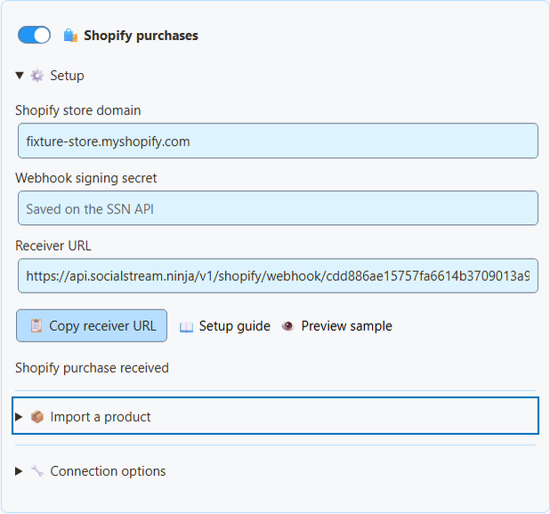
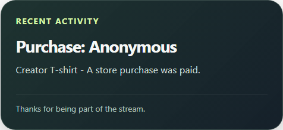

5つの手順でShopify商品を表示する
- Social Stream Ninjaで開く項目： 収益化（Monetization）→ Shopify purchases → Setup.
- ストアのアドレスを入力します。例：
your-store.myshopify.com。シークレットは不要です。 - 開く項目： 商品をインポートで商品の公開リンクを貼り、次をクリックします： 商品情報を読み込む（Load product details）.
- 名前、画像、価格、リンクを確認し、次をクリックします： 商品またはリンクを追加（Add product or link）.
- オンにする項目： 商品とサポートのリンク（Products & support links） を選び、次をクリックします： 設定を保存（Save setup）.

商品が読み込まれませんか？ 追加する項目： 公開Storefrontトークン （ShopifyのHeadlessチャネルで作成し、商品をそのチャネルとOnline Storeで公開します）。Admin APIや非公開トークンは貼り付けないでください。
取り込みで入力される内容
- 商品を1つずつ読み込みます。
- トークンはその1回の要求に使った後、消去されます。
- リンクはShopifyが提供する公開ストアリンクです。独自ドメインが提供されている場合はそれも使えます。
- すべてのバリエーションが同額の場合だけ価格を入力します。それ以外は空欄です。正しい価格だけを追加してください。
- 取り込み時点の情報です。価格や在庫は自動更新されないため、ストアに変更があれば確認してください。
- 販売できない商品や、公開Online Storeリンクのない商品は取り込めません。
- 商品を手動入力することもできます。
Shopify Storefront認証 · 商品クエリ（Product query） · Headlessで公開トークンを作成する
購入時にアラートを受け取る
まだ有効になっていません。 購入アラートにはSSNサーバーのShopify受信機能が必要です。実店舗のテストを通過するまで無効のままです。それまでは、 設定を保存（Save setup） はエラーになります。商品の表示は引き続き使えます。
- Shopifyで次を開きます： 設定 → 通知 → Webhook（Settings → Notifications → Webhooks）。Webhookの次の情報を探します： 署名用シークレット。（Storefrontトークンではありません。）
- Social Stream Ninjaで開く項目： 収益化（Monetization）→ Shopify purchases → Setup.
- 次の情報を入力します：
myshopify.comのアドレスと署名用シークレットを入力します。 - オンにする項目： Shopifyの購入 を選び、次をクリックします： 設定を保存（Save setup）.
- クリックする項目： 受信URLをコピー（Copy receiver URL）.
- ShopifyでWebhookを作成します。イベント： 注文の支払い（Order payment）。形式： JSON。URLには受信先URLを使います。
- 安定版のAPIバージョンを選んで保存します（SSNは2026-07に合わせて作られています）。
- Social Stream Ninjaを動かしたままにします。

動いていますか？ 状態欄のwaiting、test received、event skipped、purchase receivedを確認します。受信先URLがあるだけでは、設定が保存されたという意味にすぎません。
| したいこと… | 操作 |
|---|---|
| アラートを一時停止 | 無効にする項目： Shopifyの購入. |
| 完全に停止する・別のストアへ切り替える | クリックする項目： Shopifyを切断する （受信先と待機中イベントを削除）。Shopify側のWebhookも削除してください。 |
シークレットの保管場所
- 署名用シークレットはSSNの受信機能で暗号化して保存します。保存後、入力欄は空になります。
- 別の非公開読み取りキーは、このパソコンに保管されます。
- どちらもOBSリンクや視聴者向けQRコードには入りません。
- 受信機能はShopifyの署名とストア名を確認してから注文を受け付けます。
- Shopifyは専用の受信機能を使うため、旧Remote API Controlスイッチは不要です。
OBSに追加する
- 次のセクションで： 対象のOBSオーバーレイ：で、次を選択します： 商品とサポートのリンク（Products & support links）.
- 開く項目： オーバーレイリンクの設定 で、次を選びます： オーバーレイの表示形式: 商品紹介のみ （画像、価格、QRコード）、 支援カードのみ （小型のショップリンク）、または アクティビティ通知のみ （購入）。
- クリックする項目： OBSリンクをコピー。OBSへ次のソースとして追加します： ブラウザソースとして、まず800 × 600で追加します。表示ごとにソースを1つ使います。
- 実際の配信サイズでスマートフォンからQRコードを読み取ってください。

| したいこと… | 操作 |
|---|---|
| 商品のリンクをチャットで共有する | クリックする項目： 公開リンクをコピー を商品の横でクリックします。 |
| MonetizationオーバーレイでShopifyアラートだけを表示する | 設定する項目： アラートのソースフィルター → shopify。Products & support linksを有効にしてください。 |
| multi-alertsやアクティビティフィードに購入を表示する | 追加設定は不要です。商品一覧がなくてもShopifyの購入を受信します。 |
購入アラートに画像がない理由 Shopifyの注文には信頼できる画像が含まれないため、アラートは文字だけです。商品カードの画像やQRコードを借りて表示しません。
Event Flowと寄付目標
- Event FlowでEvent Typeを選びます：
purchase。ソース/タイプのフィルターを次に設定します：shopify. - 注文額の条件では、次を比較します：
meta.commerce.orderTotal。チェックするmeta.commerce.currencyを先に設定します。 - 購入は寄付ではありません。次の値は含みません：
hasDonationまたはdonoValueはなく、寄付目標も増えません。 - 商品カードにGiftと付けても注文の数え方は変わりません。別の人に発送するだけでは、あなた宛てのギフトにはなりません。
安全にテストする
クリックする項目： サンプルをプレビュー（Preview sample） で見た目を確認します。自分のセッションに接続しないため、Event Flowの実行、合計の変更、決済確認は行いません。全体を試すにはShopify開発ストアを使います。次の印がある注文は、 test: true は状態だけに表示され、アラートは出ません。
Shopify管理画面のサンプルには注意してください。 テストと明示されていないものを、特典を配る設定へ送らないでください。
実店舗なしでテスト済みの項目
実アプリで、英語以外の文字を含む署名付きメッセージ、改ざんされた署名、重複配信、テスト注文、通貨の丸め、大きすぎる要求、顧客の非公開情報の除去、オフライン後の取得をテストしています。実際の注文や販売者アカウントは使っていません。
Shopify CLIのサンプルWebhookはメッセージ処理を試せますが、購読や再試行は検証できず、アプリの認証情報も必要です。参照： Shopify CLIのWebhookテストの制限.
問題を解決する
| 問題 | 試すこと |
|---|---|
| Save setupでエラーが出る | サーバー側の受信機能がまだ有効ではありません。古いセッションWebhook URLで代用しないでください。 |
| 状態がwaitingのまま | Webhookを確認： 注文の支払い（Order payment）, JSON、正確な受信先URL、 myshopify.com のアドレスとシークレットを確認します。カスタムアプリのWebhookはそのアプリ自身のシークレットを使います。 |
| イベントが無視された | 0より大きい全額支払い済み注文で、 test: falseとされ、過去7日以内に更新された注文だけを数えます。未払い、一部払い、キャンセル済みの注文は無視します。 |
| 販売時にSSNが停止していた | 注文は最大7日待機します。SSNを起動すると届きます。 |
| アクションが2回実行された | 7日間は重複を防ぎますが、処理途中の異常終了で再実行する可能性があります。重要な自動化には独自の重複確認を追加してください。 |
| 購入者名がない | 意図的です。氏名、メール、住所、メモ、独自フィールド、決済リンク、注文IDは表示しません。 |
| 返金してもアラートが消えなかった | 返金、キャンセル、編集でアラートは取り消されません。会計管理の機能ではありません。 |
待機中の注文と重複注文の扱い
- 時計のずれを許容し、注文時刻は5分先まで受け付けます。
- 注文作成、発送、在庫変更から支払い済みと推測しません。テストフラグがない注文も無視します。
- 受信機能の再起動後も、状態と待機中の注文は残ります。
- 保存容量には限りがあります。注文を安全に保存できない場合、受信機能はShopifyへ後で再送するよう求めます。
- Shopifyの配信IDが異なっていても、ストアと注文で重複を判定します。
- SSNは受領確認の前に、処理した注文を保存します。
参照先： Shopifyイベントの詳細 および 商品とQRコードのガイド.